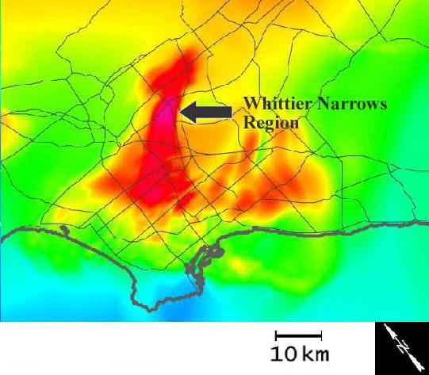
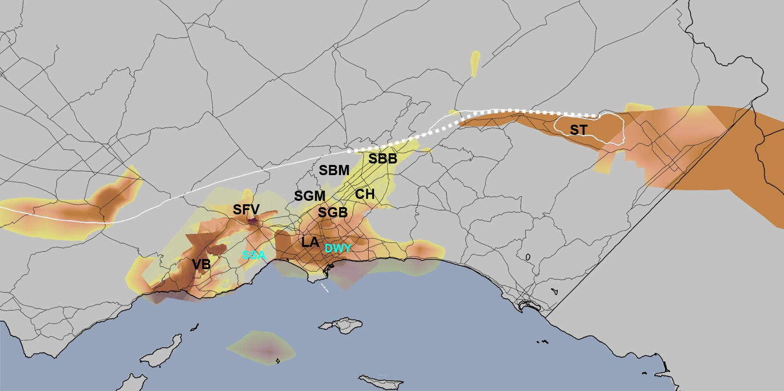

A toolmaker succeeds as, and only as, the users of his tool succeed with his aid. However shining the blade, however jeweled the hilt, however perfect the heft, a sword is tested only by cutting. That swordsmith is successful whose clients die of old age. -- Frederick P. Brooks Jr.
The goal of this year's contest is to design a visualization that is effective at answering real domain-science questions on real data sets. The use of existing visualization tools and research prototypes, and combinations of such tools are perfectly acceptible in arriving at an effective design. You will of course want to give credit to those who built the tools you used, but the focus is on effective visualization.
Domain-Science Questions
We asked the scientists what they want to know about the data -- not how to display it, but what they hope to learn from the visualizations. Here's what they want to know:
-
(25 points) Do the waves in the Whittier-Narrows area follow a pronounced sediment channel defined in the crustal structure?
-
(25 points) Do waves systematically focus toward the centers of basins, thus providing a physical explanation of the correlation of amplification factors with basin depth?
-
(25 points) At which locations do the largest conversions between wave-types occur?
-
(15 points) Which regions produce wave reflections?
-
(10 points) Do strongly shaken basins act as wave sources?
Notes on question 1: The Whittier-Narrows question is based on one of the most important scientific results from this series of simulations. The simulations showed that if the quake breaks from south to north there seems to be a wave-guide effect that channels them off the fault zone into the LA area. They saw large motion in LA (not expected). The waveguide theory is one they are looking at. They are now looking for confirmation in natural earthquakes, and this seems to happen. Nobody has really seen this in a time-varying visualization, and they would love to be able to see it both to further confirm the data and to use as a powerful tool for conveying the usefulness of simulation. The Whittier Narrows area which is east of downtown Los Angeles is near the intersection of I-605 and State Route 19. The Whittier Narrows region appears in this image of the Los Angeles area as a red and pink colored area near the center of the picture to the right (click on it for a larger image).
{kind=link}
Notes on questions 1,2,5: Several of our scientific questions relate to sedimentary basins. A sedimentary basin can be defined as a depression in the crust of the Earth in which sediments accumulate. If the depression has filled with sediments, the surface of a basin may be flat. Basins can be identified through seismic tomography or drilling. Because a basin is filled with soft material, they typically are less dense than surrounding rock areas. Several seismic studies have indicated that sedimentary basins amplify seismic shaking. There are several sedimentary basins in southern California including the Ventura Basin, the San Fernando Basin, the Los Angeles Basin, the San Gabriel Basin, and the Salton Sea Basin. There is significant interest in understanding earthquake wave behavior in basin structures. A sedimentary basin is typically identified by the density of the material in the basin. Seismologist will identify any region that supports an S-wave velocity (Vs) of 2500 m/s and less as a sedimentary basin. A map of the basins on such an isosurface can be found on the Data Description page. A map of the basins on the region boundaries is shown here to the right (click on the image for a larger rendition).
{kind=link}
Notes on question 3: What are the possible wave types and how do we tell them apart? Compressional (P), shear (S), Love (surface), and Raleigh (surface) waves are the main ones of interest to the scientists. The first two can be deeper waves and second two occur only at a free surface. A good description of these wave types can be found at http://web.ics.purdue.edu/~braile/edumod/waves/WaveDemo.htm.
Region of particular interest
In the end, the scientists care most about what happens at the surface in highly-populated areas (in particular, LA). But they also need to understand how strong waves got there or what was blocking them. Concentrating on the upper 20km of the simulation makes sense so long as this does not mask reflections coming from deeper in the simulation. Visualizations that depict a region including LA and the fault line may capture most of the important action so long as they don't clip out wave behavior that explains what happens in that area.
 The
image to the right shows three regions of interest. The largest (red)
region shows the extent of the simulation volume. The smaller blue
region includes the fault zone as well as most of the basins and the
large majority of the populated areas in the simulation region. The
smallest box (black) indicates the Los Angeles area including the
Los Angeles basin. The two smaller regions are of greatest interest
to the scientists for this simulation and visualizations may want
to focus on these areas.
The
image to the right shows three regions of interest. The largest (red)
region shows the extent of the simulation volume. The smaller blue
region includes the fault zone as well as most of the basins and the
large majority of the populated areas in the simulation region. The
smallest box (black) indicates the Los Angeles area including the
Los Angeles basin. The two smaller regions are of greatest interest
to the scientists for this simulation and visualizations may want
to focus on these areas.
Judging
There are two metrics for evaluation: the the effectiveness of the visualization and the completeness of the visualization. An effective solution clearly communicates the variables under display; such a display clearly tells the story of what occurred within the data set and helps an expert viewer answer the domain questions. A complete solution discusses the significant features of the data and how they are depicted by the visualization. It includes legends and color maps to indicate quantitative measurements to an uninformed viewer. It describes the techniques and software systems used to produce the visualization. The effective measure counts for 80% of the total points and the completeness measure 20%.
Evaluating Effectiveness (80% of total score)
The judges for this part of the score will be scientists studying earthquakes.
Effectiveness on each of the five quesrtions will be evaluated on a five-point scale, with 5 being "I could see the answer immediately and clearly" and 1 being "I know the answer already, but I still can't see it in the visualization." To randomize learning effects, we intend to have each judge view the submissions in a different, randomly-selected order. Each judge will read the PDF file accompying the submission before judging the video and/or still-image submissions, so that they will be familiar with the techniques and with how the authors believe the visualization is best viewed to answer the questions.
The total effectiveness score will be the sum of the individual scores, weighted by the relative-importance values placed on the questions (the point scores). These point scores reflect the relative importance of the questions to the scientists, not the relative ease with which each can be displayed.
The mean total score from all judges will be used as the effectiveness score.
Evaluating Completeness (20% of total score)
The judges for this part of the score will be practicing visualization researchers.
Completeness will be evaluated on a five-point scale, with 5 being "I could implement this and get these same pictures and know what settings to put on all of the parameters" and 1 being "I have no idea how to make this picture."
The mean total score from all judges will be used as the completeness score.
Determining winning entries
The final score for each team will be determined by adding 80% of the effectiveness score to 20% of the completeness score. The scores will be sorted from highest to lowest.
The highest-scoring entry will be evaluated by a group consisting of the current judges, the conference chair, and judges of past contests to determine if it is of sufficient merit to deserve an IEEE Visualization award. If so, the first-place prize will be awarded to the team that submitted this entry.
The entry with the second-highest score will be similarly evaluated and if it is of sufficient merit the team that submitted it will be awarded second place.
The entry with the third-highest score will be similarly evaluated and if it is of sufficient merit the team that submitted it will be awarded third place.
Breaking Ties: In the case of identical numerical final scores, the team with the higher effectiveness score will be selected. In the case of identical total and effectiveness scores, the team with the higher score on the question with the largest relative-imporance score will be selected. In the case of identical scores in all questions, a coin toss will be used.